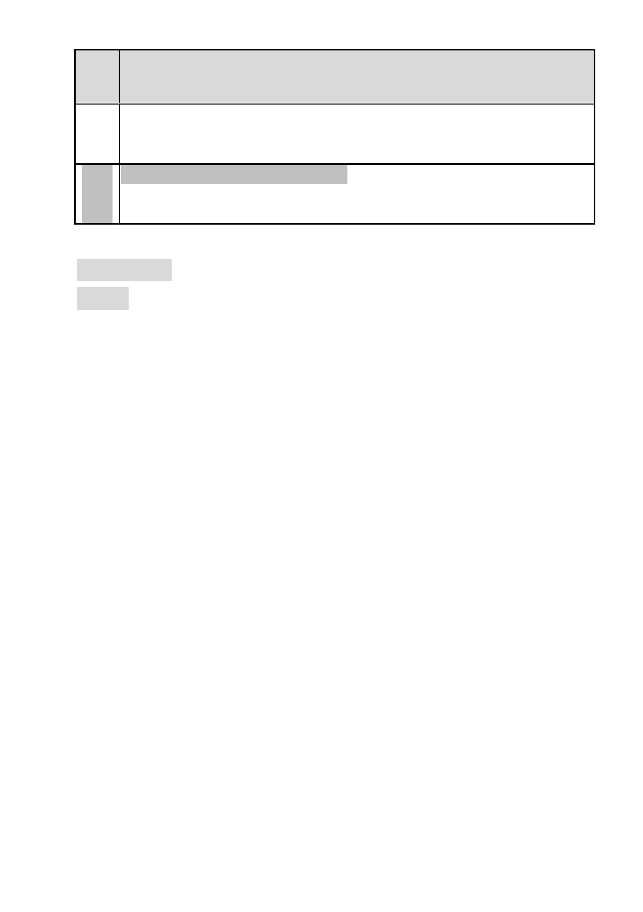

案名 擬定臺北市南港區玉成段二小段 166 地號等 5 筆土地(編號 BR-2 國產實
業)細部計畫案
區通盤檢討計畫案規定，於更新改建過程將 10 公尺寬計畫道路擴寬為
15 公尺。另因交通需求仍須考量道路系統性容量，尚非局部拓寬可解
決，故依現行方案將計畫道路拓寬為 15 公尺已為妥適尺寸。
委員 依市府及申請單位回應內容辦理。
會議
決議
審議事項 二
案名：變更臺北市文山區木柵段三小段 623 地號等 27 筆土地第三種
住宅區為第三種住宅區（特）暨修訂木柵段三小段 680 地號等
11 筆第一種商業區（特）土地使用分區管制細部計畫案
案情概要說明
一、辦理緣起
本計畫區位於臺北市文山區木柵路二段與興隆路四段交叉
路口東南側區域，包括木柵路二段 138 巷（15 公尺計畫道路）以
東及以西 2 處基地。
本案市有土地佔 71.94%，經市府選定為推動臺北市都市再
生方案之南區都市更新示範基地，並於 98 年 7 月 28 日公告劃定
為更新地區，市府依據都市更新條例第 9 條委託將捷股份有限公
司擔任該更新事業計畫實施者。
實施者依臺北市政府公告之「修訂臺北市老舊中低層建築社
區辦理都市更新擴大協助專案計畫」，向市府提出申請，期望藉由
都市計畫專案辦理細部計畫變更，爭取本專案相關容積獎勵，市
府（臺北市都市更新處）爰依都市計畫法第 27 條第 1 項第 4 款申
請本細部計畫變更案，經市府公告自 100 年 12 月 16 日起公開展
覽 30 天，並於 100 年 12 月 15 日以府授都規字第 10037069803
號函送計畫書到會審議。
-9-